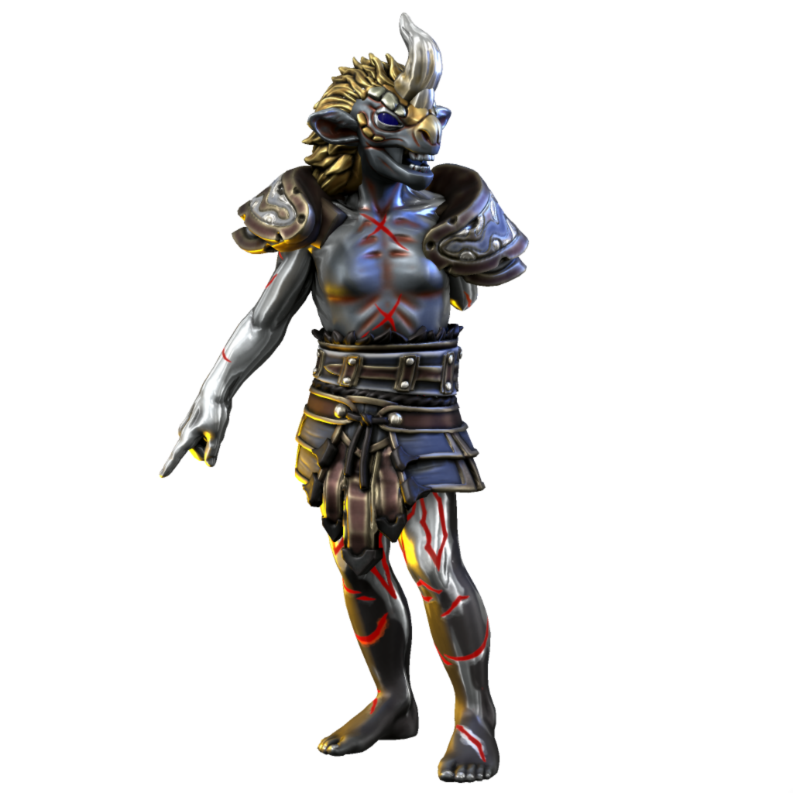

Vilae

Seraph of determination
Despite his grim demeanor and frightening appearance, Vilae is counted among the good-aligned seraphim. He embodies sheer force of will, which is generally a positive facet of the sapient psyche.
His thick hide is covered with long-healed scars and he is missing an arm. As the physical form of a daemon manifests according to their psychic domain, these are more symbolic than actual injuries he has sustained.
Names
| Language | Name | Pronunciation |
|---|---|---|
| Common | Vilae | vɪleɪ |
| Dracean | Vilae | vɪleɪ |
| Uttic | Vili | vɪli |
| Noordic | Vilem | wɪlem |
| Jotic | Vilm | wilm |
| Atkani | Vilu'ma | vilu'ma |
| Savonic | Ma'vi'lu | ma'vɪ'lu |
| Kushite | Mir'iru | mir'iru |
| Loxan | Moi | mɔɪ |
| Parbati | Mo'iru | mo'əru/ |
| Scutian | Illu | ilu |
| Servian | Miru | mɪəru |
| Kypritic | Moiu | mɔɪu |
| Ataithan | Miodhu | maɪðə |